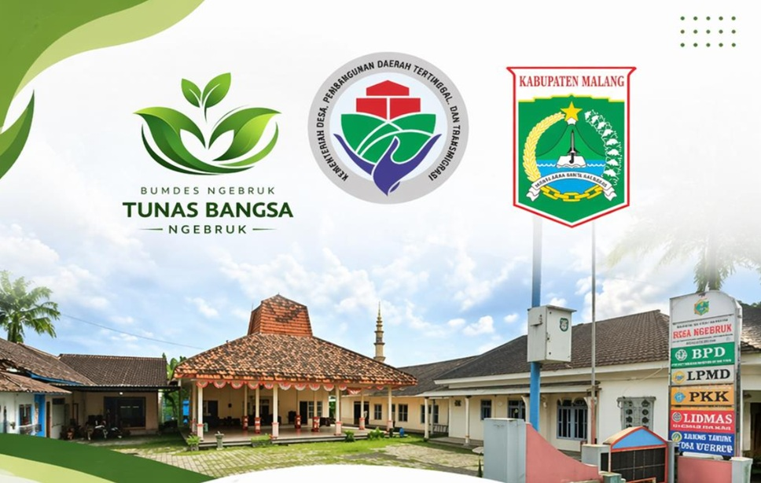

Badan Usaha yang berkomitmen dalam pengembangan unit-unit penting seperti Air Bersih, Sampah, Pertanian, dan Perikanan untuk kesejahteraan masyarakat.
Melayani kebutuhan air bersih masyarakat dengan teknologi terbaru.
Pengelolaan sampah yang ramah lingkungan dan berkelanjutan.
Mendorong pertanian modern dan inovatif untuk meningkatkan hasil panen.
Pengembangan perikanan untuk meningkatkan kesejahteraan Peternak Ikan.